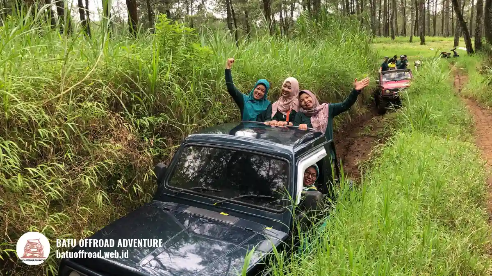

Offroad Coban Putri Batu Land Rover dan Shuttle Siap Booking
Offroad Coban Putri Batu bersama kami memadukan Land Rover 4x4, shuttle transportasi, dan outbound team building di kawasan yang dekat dengan coban. Lokasinya juga dekat Jatim Park 2 dan Eco Active Park. Kirim tanggal dan jumlah peserta lewat WhatsApp +62 812-3398-9707 untuk booking jadwal rombongan Anda.
- Jarak ke coban dekat, sehingga waktu rombongan lebih banyak dipakai untuk kegiatan, bukan di jalan.
- Land Rover offroad dan shuttle transportasi tersedia untuk rombongan keluarga, kantor, sekolah, dan komunitas.
- Outbound team building bisa digabung dengan offroad dalam satu jadwal.
- Jatim Park 2 dan Eco Active Park berada dekat, jadi mudah dijadikan tujuan lanjutan.
Mengapa Offroad Coban Putri Cocok untuk Rombongan
Offroad Coban Putri cocok untuk rombongan karena jarak cobannya dekat, tersedia shuttle transportasi, ada Land Rover offroad, ada outbound team building, dan lokasinya berdekatan dengan wisata populer Batu.
Kami, tim Batu Offroad, melayani rombongan di kawasan Batu setiap pekan. Berdasarkan data pada situs resmi Batu Offroad Adventure tahun 2026, kami telah menyelenggarakan lebih dari 180 event dan menyediakan lebih dari 3 rute offroad. Dari pengalaman itu, kami melihat lima alasan utama rombongan memilih kegiatan di sekitar Coban Putri.
Jarak coban dekat dan hemat waktu
Jarak yang dekat membuat jadwal rombongan lebih longgar. Peserta tidak menghabiskan separuh hari di perjalanan, sehingga sesi offroad, makan siang, dan permainan kelompok bisa berjalan tanpa terburu-buru.
Shuttle transportasi untuk rombongan besar
Layanan shuttle transportasi kami membantu rombongan berpindah antar titik kegiatan dengan teratur. Koordinator tidak perlu mengatur banyak kendaraan pribadi, dan peserta tetap berada dalam satu alur acara.
Land Rover offroad yang mudah dikenali
Land Rover memberi kesan petualangan yang kuat. Unit ini dikemudikan oleh driver berpengalaman, dan keselamatan penumpang menjadi prioritas, sama seperti pada jeep offroad Batu lain yang kami jalankan bersama pemandu untuk rombongan.
Outbound team building dalam satu paket
Kegiatan outbound team building cocok untuk kantor, sekolah, dan komunitas karena manfaat outbound di alam terbuka untuk kerja sama tim terasa langsung pada komunikasi dan kepercayaan antaranggota. Sesi ini dapat dipasangkan dengan offroad agar jadwal terasa seimbang antara menantang dan santai.
Dekat Jatim Park 2 dan Eco Active Park
Kedekatan dengan Jatim Park 2 dan Eco Active Park memudahkan rombongan menambah tujuan wisata setelah offroad. Satu hari di Batu pun terasa lebih lengkap.
Apa Saja Kegiatan dan Kendaraan yang Tersedia
Kami menyediakan offroad, fun games, outbound team building, rafting, paintball, ATV, dan trip Bromo. Kendaraan utamanya Land Rover dan jip 4x4, dikemudikan driver berpengalaman bersama guide atau instruktur.
Tabel berikut merangkum pilihan kegiatan yang paling sering diminta rombongan, mengacu pada daftar paket di situs resmi kami.
| Kegiatan | Kendaraan | Cocok untuk | Isi utama |
|---|---|---|---|
| Offroad dan fun games | Land Rover atau jip 4x4 | Keluarga, komunitas, gathering santai | Driver dan guide, sesi fun games, peralatan games, tiket rute offroad |
| Offroad dan team building | Land Rover atau jip 4x4 | Kantor, sekolah, kampus | Driver dan instruktur, sesi team building, peralatan outbound, tiket rute offroad |
| Offroad, rafting, dan fun games | Jip 4x4 | Rombongan yang suka air | Tiket rafting 12 km, sesi fun games, peralatan keamanan, makan siang satu kali |
| Offroad, paintball, dan fun games | Jip 4x4 dan driver | Komunitas dan tim muda | Tiket paintball 50 peluru, seragam dan goggle, fun games terpadu |
| Paket ATV | Unit ATV | Peserta yang ingin jalur hutan dan lumpur | Instruktur, safety gear, air mineral dan snack, dokumentasi |
Seluruh paket kami menyertakan peralatan keamanan, dan rombongan umumnya mulai dari 10 orang. Keluarga dan komunitas yang ingin suasana santai biasanya memilih paket offroad dan fun games, sedangkan kantor dan sekolah lebih sering memilih paket offroad dan team building.
Peserta yang suka tantangan air cocok dengan paket offroad, rafting, dan fun games, dan tim muda yang gemar kompetisi sering menambah paket offroad, paintball, dan fun games. Di luar tabel, kami juga melayani paket ATV dan paket Bromo, dan seluruh pilihannya tersusun dalam daftar paket Batu Offroad.

Kegiatan offroad Coban Putri Batu menyajikan kombinasi medan tanah dan rute pemandangan alam
Bagaimana Rute Menuju Coban Putri dari Titik Awal Rombongan
Rute menuju Coban Putri dimulai dari Kota Batu, Kota Malang, bandara, atau stasiun, lalu menuju basecamp kami di kawasan Temas, Kecamatan Batu, sebelum dilanjutkan dengan kegiatan.
Dari Alun-alun Batu, rombongan bergerak ke arah Temas dengan mengikuti navigasi ke Batu Offroad Adventure. Dari Kota Malang, perjalanan mengarah ke Kota Batu terlebih dahulu.
Tamu yang tiba lewat Bandara Abdul Rachman Saleh atau Stasiun Malang juga mengikuti jalur ke Kota Batu. Akses menuju basecamp berupa aspal dan makadam yang diperkeras, sehingga dapat dilalui motor, mobil LCGC, sedan, MPV keluarga, hingga bus rombongan sampai area parkir.
Pada rute ke Coban Putri dari berbagai titik awal, kami menyarankan berangkat pagi agar rombongan tiba sebelum jalur ramai dan masih punya waktu longgar untuk briefing.
Fasilitas Apa yang Tersedia untuk Rombongan
Fasilitas untuk rombongan meliputi parkir luas untuk bus dan mobil pribadi, toilet bersih dan terpisah, musholla, kantin, pendopo permanen, dan titik listrik di area komunal.
Setiap fasilitas dirancang agar kegiatan berjalan nyaman dari kedatangan sampai kepulangan. Area parkir luas menampung bus dan mobil pribadi. Toilet tersedia dalam kondisi bersih dan terpisah.
Musholla berkapasitas sekitar 8 sampai 10 orang, sehingga ibadah dapat dilakukan bergantian. Kantin kami menyediakan makanan berat dan ringan. Pendopo permanen berfungsi sebagai tempat berteduh ketika hujan dan sebagai area briefing.
Titik listrik di pendopo dan area resepsionis dapat dipakai untuk mengisi daya ponsel atau kebutuhan acara. Gabungan fasilitas Coban Putri untuk rombongan ini membuat peserta bisa beristirahat dengan nyaman di antara sesi kegiatan.
Wisata Apa yang Dekat dari Coban Putri
Wisata dekat Coban Putri yang paling mudah digabung dengan offroad adalah Jatim Park 2 dan Eco Active Park, ditambah beberapa tujuan lain di Kota Batu.
- Jatim Park 2: taman rekreasi keluarga yang dikenal dengan kebun binatang dan museum satwa, cocok untuk rombongan dengan anak-anak.
- Eco Active Park: tujuan wisata bernuansa petualangan dan permainan luar ruang yang cocok untuk tim yang masih ingin aktif setelah offroad.
- Coban Talun: air terjun lain di Batu yang bisa dijadikan tambahan bagi rombongan yang gemar wisata alam.
Rombongan yang ingin menggabungkan beberapa tujuan biasanya menyusun wisata dekat Coban Putri dari Jatim Park 2 sampai Eco Active menjadi satu itinerary sehari, dengan offroad di pagi hari dan wisata santai pada siang dan sore.
Bagaimana Cara Booking Offroad Lewat WhatsApp
Booking dilakukan lewat WhatsApp +62 812-3398-9707 dengan menyebut tanggal, jumlah peserta, dan jenis kegiatan. Kami lalu mengecek ketersediaan armada dan menyusun jadwal untuk rombongan Anda.
Alurnya sederhana:
- Pilih paket atau minta rekomendasi sesuai tujuan rombongan.
- Hubungi kami lewat WhatsApp untuk mengecek tanggal dan armada.
- Datang ke basecamp sesuai jadwal. Briefing keselamatan dan kegiatan dipandu guide.
Kami menyarankan pemesanan sekitar 1 sampai 2 minggu sebelum kedatangan, terutama untuk akhir pekan dan hari libur nasional. Untuk informasi harga, silakan tanyakan langsung melalui WhatsApp agar penawaran sesuai kebutuhan rombongan.
Tips Apa yang Perlu Disiapkan Sebelum Berangkat
Persiapan terbaik meliputi pakaian berlapis, alas kaki antiselip, perlindungan dari debu, dan kesiapan fisik peserta, serta kepatuhan pada arahan guide selama di jalur.
Checklist Persiapan Berangkat
- Kenakan pakaian yang nyaman dan boleh kotor, serta bawa pakaian ganti.
- Gunakan sepatu atau sandal gunung yang tidak licin.
- Bawa masker atau buff, kacamata, dan perlindungan dari matahari.
- Simpan barang berharga di tempat aman dan tahan air.
- Ikuti briefing keselamatan dan arahan driver sepanjang perjalanan.
- Beri tahu kami sebelum berangkat jika ada peserta lansia, anak, atau yang punya kondisi kesehatan tertentu.
FAQ
-
Apa itu offroad Coban Putri Batu?
Offroad Coban Putri Batu adalah kegiatan berkendara Land Rover atau jip 4x4 di jalur alam kawasan Batu yang dekat dengan coban. Berbeda dengan offroad ekstrem, wisata offroad Batu dirancang aman, dipandu driver berpengalaman, dan dapat digabung dengan fun games atau outbound. -
Apakah tersedia shuttle transportasi untuk rombongan?
Ya, kami menyediakan shuttle transportasi untuk memudahkan rombongan berpindah antar titik kegiatan. Sampaikan jumlah peserta dan rencana jadwal lewat WhatsApp agar kami dapat mengatur armadanya. -
Apakah bisa digabung dengan outbound team building?
Bisa. Offroad dapat dipasangkan dengan outbound team building, fun games, rafting, atau paintball. Pilihan kombinasi dapat dikonsultasikan lewat WhatsApp sesuai tujuan rombongan. -
Berapa minimal peserta untuk booking?
Paket rombongan kami umumnya dimulai dari 10 orang. Untuk jumlah peserta yang lebih sedikit, silakan tanyakan lewat WhatsApp agar kami bisa menyarankan opsi yang sesuai. -
Bagaimana jika turun hujan saat jadwal offroad?
Armada kami dilengkapi atap dan perlindungan yang memadai. Selain itu, pendopo permanen kami dapat menjadi tempat berteduh sementara sambil menunggu cuaca mendukung.
Kesimpulan
Offroad Coban Putri cocok bagi rombongan yang ingin kegiatan seru tanpa perjalanan yang melelahkan. Jarak coban dekat, shuttle transportasi tersedia, Land Rover siap membawa peserta, dan outbound team building dapat ditambahkan. Jatim Park 2 dan Eco Active Park yang berdekatan membuat satu hari di Batu terasa lengkap.
Takeaways:
- Tentukan tujuan rombongan dahulu, lalu pilih kegiatan yang sesuai.
- Kirim tanggal dan jumlah orang lewat WhatsApp untuk mengecek ketersediaan.
- Siapkan pakaian, alas kaki, dan kondisi fisik peserta sebelum berangkat.
Rencanakan jadwal rombongan Anda bersama tim Batu Offroad. Kirim tanggal dan jumlah orang ke WhatsApp +62 812-3398-9707 dan kami susun kegiatannya untuk Anda.
Artikel Terkait